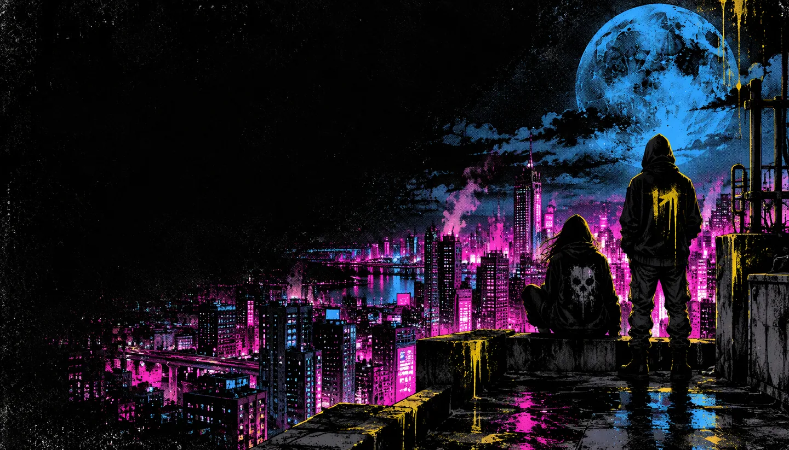
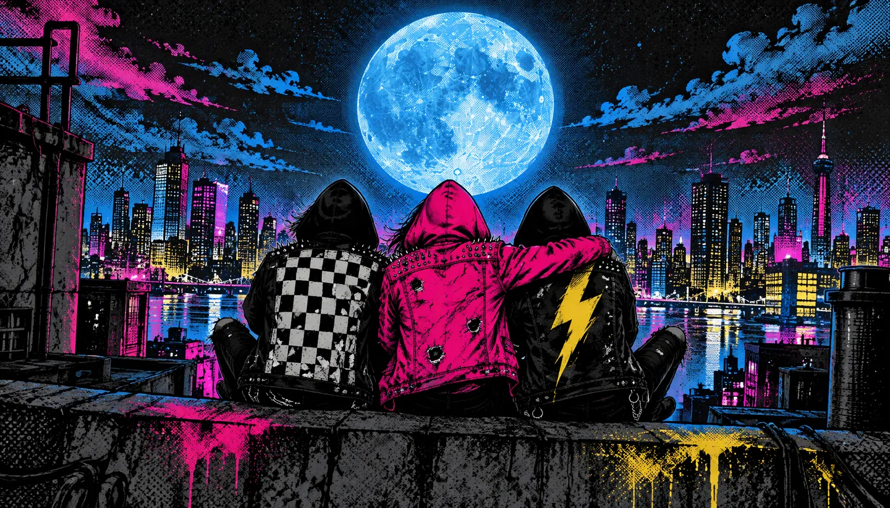
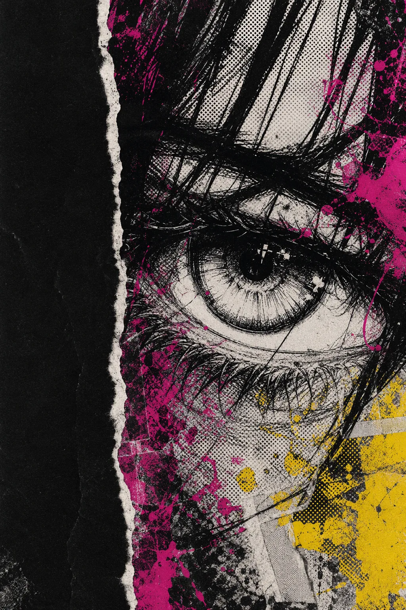
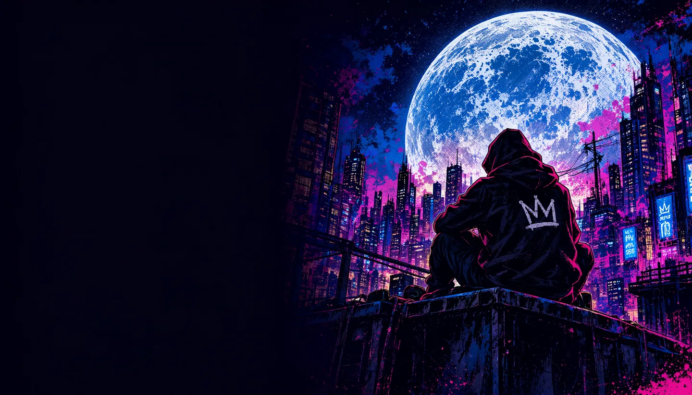

Command scene Scene

1440 × 823 WebP. Use alt="" for decorative art. Keep headings, controls and meaningful information in accessible HTML. If the image conveys unique information, supply contextual alt outside aria-hidden art slots.


Rooftop crew scene Scene

1440 × 823 WebP. Use alt="" for decorative art. Keep headings, controls and meaningful information in accessible HTML. If the image conveys unique information, supply contextual alt outside aria-hidden art slots.


Illustrated atlas backdrop Atlas
1440 × 960 WebP. Use alt="" for decorative art. Keep headings, controls and meaningful information in accessible HTML. If the image conveys unique information, supply contextual alt outside aria-hidden art slots.


Command eye accent HUD

1024 × 1536 WebP. Use alt="" for decorative art. Keep headings, controls and meaningful information in accessible HTML. If the image conveys unique information, supply contextual alt outside aria-hidden art slots.


City establishing scene Scene

1440 × 823 WebP. Use alt="" for decorative art. Keep headings, controls and meaningful information in accessible HTML. If the image conveys unique information, supply contextual alt outside aria-hidden art slots.


Witness rail artwork HUD
1024 × 1536 WebP. Use alt="" for decorative art. Keep headings, controls and meaningful information in accessible HTML. If the image conveys unique information, supply contextual alt outside aria-hidden art slots.


Transparent moon overlay HUD
1024 × 1024 WebP. Use alt="" for decorative art. Keep headings, controls and meaningful information in accessible HTML. If the image conveys unique information, supply contextual alt outside aria-hidden art slots.


Component usage
Effects are opt-in; source artwork is already textured. This preview adds no texture or motion. Current working-tree ScenePanel and AtlasStage components use explicit effects. Older versions may inherit skin preset effects even when the effects prop is omitted. Check the installed UI version before adding effects.
These JSX examples require the existing MoonWitness UI styles and skin setup. Copy this folder into your application's public assets before using the example URL. Art slots are decorative and hidden from assistive technology; keep meaningful content outside them. Verify text contrast and cropping in the consuming layout.
import { ScenePanel, AtlasStage } from "@moonwitness/ui";
// Copy the pack into your public asset directory and set its deployed URL.
const packUrl = "/packs/living-story-console-v1";
<ScenePanel
scrim="left"
art={<img src={`${packUrl}/shadow-command-hero-1440.webp`} alt=""
width={1440} height={823}
style={{ width: "100%", height: "100%", objectFit: "cover", objectPosition: "50% 50%" }} />}
>
<div style={{ minHeight: "20rem", padding: "2rem" }}>
<h2>Command scene</h2>
<p>Keep live information in HTML, not in the artwork.</p>
</div>
</ScenePanel>
<AtlasStage
backdrop={<img src={`${packUrl}/world-map-atlas-1440.webp`} alt=""
width={1440} height={960}
style={{ width: "100%", height: "100%", objectFit: "contain", objectPosition: "50% 50%" }} />}
>
<div style={{ minHeight: "24rem" }}>
<h2>World atlas</h2>
<p>Illustrated backdrop, not geographic data.</p>
</div>
</AtlasStage>